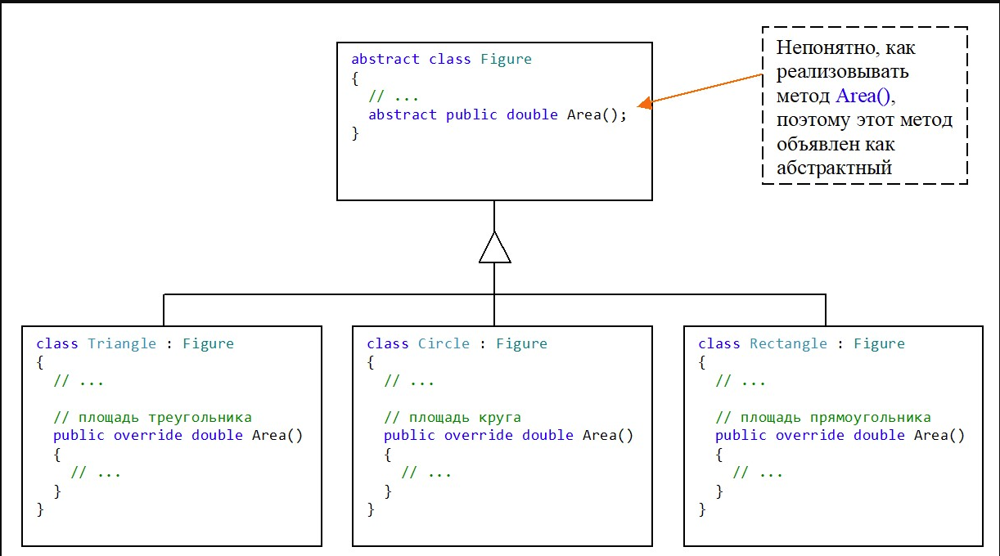
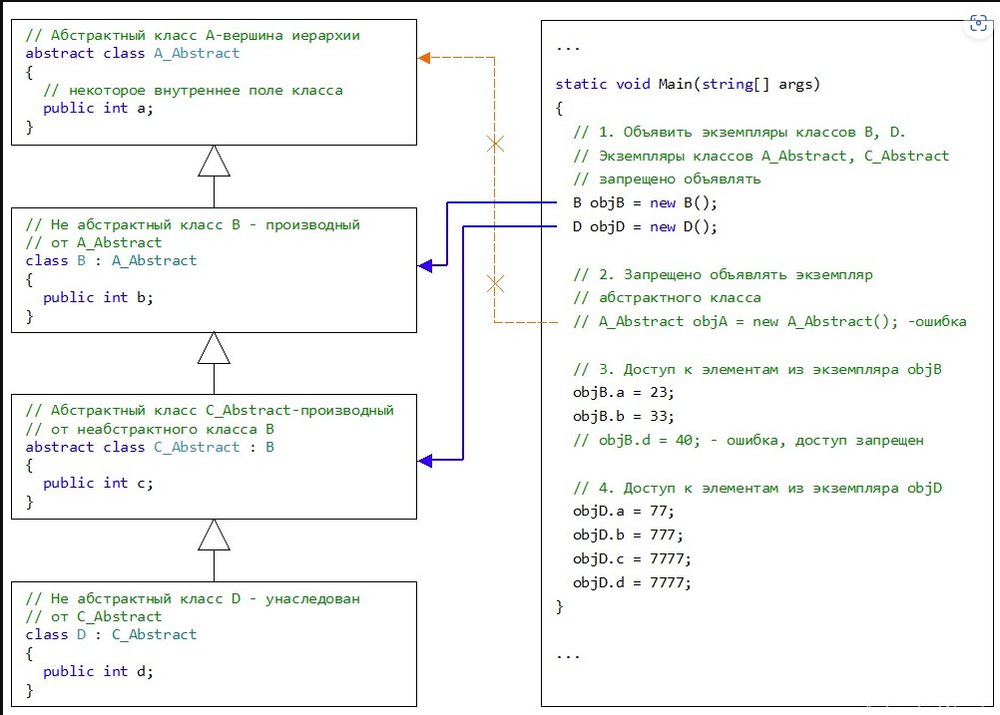

| Тема 1 Абстрактный класс. Основные понятия. | ||
| Назад | ||
1. Понятие абстрактного класса. Необходимость использования абстрактного класса.Бывают случаи, когда нужно создать наиболее общую форму базового класса, которая будет наполняться деталями в производных (унаследованных) классах. В таком случае элементы базового класса (методы, свойства и т.п.) носят весьма неопределенный характер и реализовывать их не имеет смысла. Классы, содержащие элементы без конкретной реализации, называются абстрактными. В абстрактном классе объявляется только общий характер элемента, который будет наполняться содержанием в унаследованных классах. Абстрактный класс – это класс, в котором объявлен хотя бы один абстрактный элемент (метод, свойство). Если в абстрактном классе объявлен абстрактный элемент, (метод, свойство) то перед именем такого класса ставится ключевое слово abstract. Если в производном классе нужно определить конкретную реализацию элемента (метода, свойства) абстрактного класса, то при объявлении элемента указывается ключевое слово override. Абстрактный класс предусматривает использование его как базового для других унаследованных классов. В свою очередь, унаследованный класс должен реализовать все абстрактные элементы базового абстрактного класса. Если, по какой-то причине в унаследованном классе не нужно реализовывать элементы абстрактного класса, то такой класс также нужно объявить как абстрактный.
Например. Пусть нужно разработать базовый класс Figure, что описывает некоторую фигуру. Из этого класса должны быть унаследованы более конкретные реализации фигур: треугольник (Triangle), круг (Circle), прямоугольник (Rectangle) как изображено на рисунке 1. Пусть в иерархию классов нужно ввести метод Area(), определяющий площадь фигуры. В базовом классе Figure и производных классах, метод Area() использует механизм полиморфизма при его вызове. Реализация метода Area() в производных классах (Triangle, Circle, Rectangle) есть понятной. Для любого из этих производных классов существует свой способ определения площади. Однако, невозможно определить площадь для метода Area() базового класса Figure, поскольку, на этом этапе еще не известно для какой фигуры нужно вычислять площадь. Поэтому, реализация (тело) метода Area() не имеет смысла. Такой метод целесообразно объявлять как абстрактный с ключевым словом abstract. Автоматически, класс Figure также становится абстрактным.

Рисунок 1. Необходимость использования абстрактных классов. ⇑2. Общая форма объявления абстрактного класса. Ключевое слово abstractЧтобы объявить абстрактный класс нужно использовать ключевое слово abstract. В простейшем случае общая форма объявления абстрактного класса с именем ClassName следующая abstract class ClassName { // Абстрактные и неабстрактные элементы // ... } Согласно синтаксису C# перед ключевым словом abstract может использоваться модификатор доступа public или internal. 3. Какие элементы класса могут быть абстрактными? ПримерС ключевым словом abstract можно объявлять:
Нельзя объявить абстрактное поле (переменную) класса. Пример. В примере демонстрируется объявление разных абстрактных элементов класса. ... // Объявить тип делегата delegate int MyDelegate(int a, int b); abstract class A { // Абстрактный метод public abstract void Print(); // Абстрактное свойство public abstract int IntProp { get; set; } // Абстрактный индексатор public abstract int this[int index] { get; set; } // Абстрактное событие public abstract event MyDelegate MyEvent; } ... 4. Что такое абстрактный метод? Общая форма объявления абстрактного методаАбстрактный метод – это метод, в котором отсутствует реализация. Абстрактный метод не содержит тела метода. Для абстрактного метода задается только его сигнатура: возвращаемый тип, имя и список параметров. Общая форма объявления абстрактного метода: access_modifier abstract return_type MethodName(parameters); здесь
5. Общая форма объявления абстрактного свойстваОбщая форма объявления абстрактного свойства access_modifier abstract return_type PropName { get; set; } здесь
Как и в случае обычного свойства, спецификаторы доступа get или set могут отсутствовать. 6. Общая форма объявления абстрактного индексатораВ C# допускается использование абстрактных индексаторов. Общая форма объявления абстрактного индексатора следующая:
access_modifier abstract return_type this[type_index index] { get; set; } здесь
Абстрактный индексатор должен содержать по крайней мере один из спецификаторов get или set. 7. Общая форма объявления абстрактного событияЧтобы объявить абстрактное событие предварительно должен быть объявлен тип делегата для этого события. Общая форма объявления абстрактного события следующая: access_modifier abstract event Delegate_Type eventName; где
Тип делегата Delegate_Type объявляется как delegate return_type Delegate_Type(parameters); здесь
8. Какие ограничения накладываются на абстрактные классы и их экземпляры?На абстрактные классы накладываются следующие ограничения:
9. Можно ли в абстрактном классе объявлять не абстрактные элементы?Да, можно. В абстрактном классе можно объявлять любые не абстрактные элементы, которые обычно объявляются в классах (поля данных, методы, свойства, индексаторы и т.д.). 10. Можно ли использовать конструкторы в абстрактном классе?В абстрактном классе допускается использование конструкторов. Хотя экземпляр абстрактного класса создать не удастся. Конструкторы в абстрактном классе необходимы для реализации начальной инициализации внутренних полей абстрактного класса (если такие есть). Эти конструкторы вызываются с помощью ключевого слова base в производных классах. Более подробно об особенностях использования ключевого слова base в конструкторах производных классов описывается здесь. 11. Какие ограничения накладываются на абстрактные элементы класса (методы, свойства)?Абстрактные элементы класса – это элементы, которые объявлены с ключевым словом abstract. На абстрактные элементы (методы, свойства, индексаторы, события) накладываются следующие ограничения:
12. Может ли абстрактный класс не содержать объявления абстрактных элементов?
Да, может. Компилятор C# допускает объявление класса с ключевым
словом abstract в
котором нет абстрактных элементов. Например. В начале разработки иерархии классов вводится абстрактный класс-заглушка. В данном примере объявляется класс с именем BaseAbstractClass // Базовый класс в иерархии, еще пока что // не содержит абстрактных элементов abstract class BaseAbstractClass { // Здесь в будущем могут быть // добавлены абстрактные элементы } 13. Рисунок, демонстрирующий использование абстрактного класса
 Рисунок 2. Пример использования абстрактного класса 14. Может ли абстрактный класс наследовать другой абстрактный класс? Может ли абстрактный класс наследовать другой не абстрактный класс?Да. Абстрактный класс может наследовать как абстрактный, так и не абстрактный класс. В этом случае действуют правила наследования такие же как при наследовании не абстрактных классов. Во всей цепи иерархии абстрактные и не абстрактные классы могут поочередно наследовать друг друга. Пример. Нижеследующий пример демонстрирует свободу в использовании абстрактных классов в сочетании с неабстрактными. namespace ConsoleApp5 { // Абстрактный класс A_Abstract - вершина иерархии abstract class A_Abstract { // некоторое внутреннее поле класса public int a; } // Не абстрактный класс B - производный от A_Abstract class B : A_Abstract { public int b; } // Абстрактный класс C_Abstract - производный от неабстрактного класса B abstract class C_Abstract : B { public int c; } // Не абстрактный класс D class D : C_Abstract { public int d; } class Program { static void Main(string[] args) { // 1. Объявить экземпляры классов B, D. // Экземпляры классов A_Abstract, C_Abstract запрещено объявлять B objB = new B(); D objD = new D(); // A_Abstract obj = new A_Abstract(); - ошибка // 2. Доступ к элементам из экземпляра objB objB.a = 23; objB.b = 33; // obj.d = 40; - ошибка, невозможно доступиться к элементу унаследованного класса // 3. Доступ к элементам из экземпляра objD objD.a = 77; objD.b = 777; objD.c = 7777; objD.d = 7777; } } } 15. Различия между абстрактными классами и интерфейсамиМежду интерфейсами и абстрактными классами были замечены следующие различия:
|
||
| Конспект подготовлен Бакулиным А. М. 2022 год. | ||